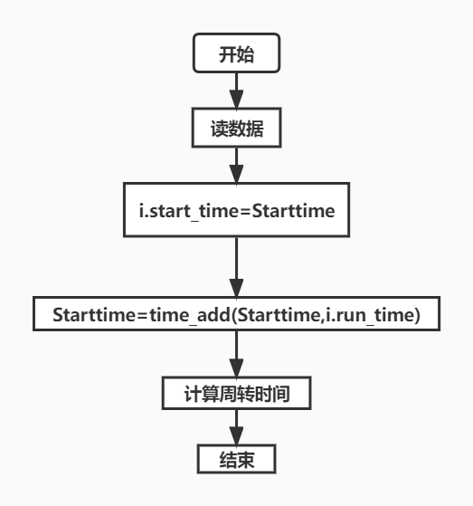
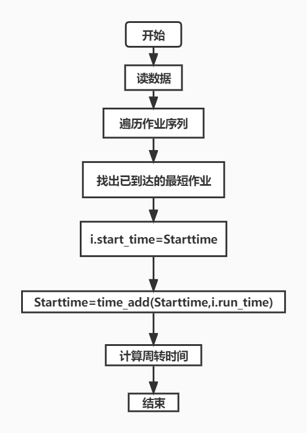
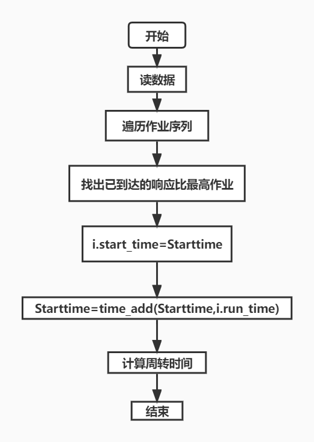

一、实验目的
学习作业调度基本思想
熟练描述各种作业调度算法的过程
分析各种算法的优缺点
二、实验内容
FCFS先来先服务算法
SJF最短作业优先算法
HRN最高响应比算法、
三、实验环境
实践平台：windows
编写环境：python
编译器：pycharm
四、实验设计原理
FCFS：先来先服务
根据作业进入的先后顺序进行调度，最先进入的最先执行
SJF：最短作业优先
根据执行所需的时间来确定下一个执行的作业
HRN：最高相应比优先
输入井中的每个作业根据当前运行的作业计算出作业的响应比，响应比最高的将被调度
五、实验详细实现过程及算法流程
FCFS先来先服务

SJF最短作业优先

HRN最高响应比优先

六、实验调试与结果分析 输入:
1. FCFS
SJF
3. HRN
七、源代码
Homework类
1 2 3 4 5 6 7 8 9 10 11 12 13 14 15 16 17 18 19 20 21 22 23 24 25 26 27 28 29 30 class Homework (object ): def __init__ (self,num,input_time,run_time ): self.num = num self.input_time = int (input_time) self.run_time = int (run_time) self.start_time = 0 self.end_time = 0 self.turn_around = 0 self.dai_time = 0 def zhouzhuan (self ): sub = int (self.end_time/100 ) - int (self.input_time/100 ) self.turn_around = self.end_time%100 - self.input_time%100 + sub*60 return self.turn_around def daiquan (self ): sub = int (self.end_time/100 ) - int (self.input_time/100 ) self.dai_time = (self.end_time%100 - self.input_time%100 + sub*60 )/self.run_time return self.dai_time def display (self ): print ("{:<2d} {:<2d} {:<2d} {:<3d} {:<5d} {:<2d} {:>4.3f}" .format (self.num,self.input_time, self.run_time, self.start_time, self.end_time, self.turn_around, self.dai_time))
2. 功能函数
1 2 3 4 5 6 7 8 9 10 11 12 13 14 15 16 17 18 19 20 21 22 23 24 25 26 27 28 29 30 31 32 33 34 35 def time_sub (a_time,b_time ): hour1 = int (a_time/100 ) minute1 = a_time%100 hour2 = int (b_time/100 ) minute2 = b_time%100 ans = (hour2-hour1)*60 + (minute2-minute1) return ans def time_add (a_time,b_run ): hour1 = int (a_time/100 ) minute1 = a_time%100 hour2 = hour1+int ((minute1+b_run)/60 ) minute2 = (minute1+b_run)%60 b_time = hour2*100 + minute2 return b_time def sort (Homework ): for i in range (len (Homework)): for j in range (i+1 ,len (Homework)): if (Homework[i].input_time > Homework[j].input_time): t = Homework[i].input_time Homework[i].input_time = Homework[j].input_time Homework[j].input_time = t
3. 具体算法函数
1 2 3 4 5 6 7 8 9 10 11 12 13 14 15 16 17 18 19 20 21 22 23 24 25 26 27 28 29 30 31 32 33 34 35 36 37 38 39 40 41 42 43 44 45 46 47 48 49 50 51 52 53 54 55 56 57 58 59 60 61 62 63 64 65 66 67 68 69 70 71 72 73 74 75 76 77 78 79 80 81 82 83 84 85 86 87 88 89 90 91 92 93 94 95 96 97 98 99 100 101 102 103 104 105 106 107 108 109 110 111 112 113 114 115 116 117 118 119 120 def FCFS (Homework ): print ("先来先服务算法:" ) print ("作业\t进入时间\t估计运行时间(分钟)\t开始时间\t结束时间\t周转时间\t带权周转时间" ) sort(Homework) Starttime = 0 sum_zhouzhuan = 0 sum_daiquan = 0 for i in Homework: if Starttime>=i.input_time: i.start_time = Starttime else : Starttime = i.input_time i.start_time = Starttime Starttime = time_add(Starttime,i.run_time) i.end_time = Starttime sum_zhouzhuan += i.zhouzhuan() sum_daiquan += i.daiquan() i.display() T = sum_zhouzhuan/len (Homework) W = sum_daiquan/len (Homework) print ("作业平均周转时间 T = %.3f 分钟" % T) print ("作业带权平均周转时间 W = %.3f " % W) def SJF (Homework ): print ("短作业优先算法:" ) print ("作业\t进入时间\t估计运行时间(分钟)\t开始时间\t结束时间\t周转时间\t带权周转时间" ) sort(Homework) Starttime = Homework[0 ].input_time sum_zhouzhuan = 0 sum_daiquan = 0 index = Homework[0 ] for i in range (len (Homework)): min_runtime = 999 for j in Homework: if (j.run_time < min_runtime and j.input_time <= Starttime and j.start_time == 0 ): min_runtime = j.run_time index = j index.start_time = Starttime index.run_time = min_runtime Starttime = time_add(Starttime,index.run_time) index.end_time = Starttime sum_zhouzhuan += index.zhouzhuan() sum_daiquan += index.daiquan() index.display() T = sum_zhouzhuan / len (Homework) W = sum_daiquan / len (Homework) print ("作业平均周转时间 T = %.3f 分钟" % T) print ("作业带权平均周转时间 W = %.3f " % W) def HRN (Homework ): print ("最高响应比算法:" ) print ("作业\t进入时间\t估计运行时间(分钟)\t开始时间\t结束时间\t周转时间\t带权周转时间" ) sort(Homework) Starttime = Homework[0 ].input_time sum_zhouzhuan = 0 sum_daiquan = 0 index = Homework[0 ] max_R = 0 R = 0 for i in range (len (Homework)): max_R = 0 for j in Homework: a = j.start_time b = j.input_time if (j.start_time == 0 and j.input_time<=Starttime): R = (time_add(Starttime,j.run_time)-j.input_time) / j.run_time if (R>max_R): max_R = R index = j index.start_time = Starttime Starttime = time_add(Starttime,index.run_time) index.end_time = Starttime sum_zhouzhuan += index.zhouzhuan() sum_daiquan += index.daiquan() index.display() T = sum_zhouzhuan / len (Homework) W = sum_daiquan / len (Homework) print ("作业平均周转时间 T = %.3f 分钟" % T) print ("作业带权平均周转时间 W = %.3f " % W)
主函数
1 2 3 4 5 6 7 8 9 10 11 12 13 14 15 16 17 18 19 20 21 22 23 24 25 26 27 28 29 30 31 32 33 34 35 36 37 38 if __name__ == "__main__" : temp = [] print ("输入作业序列:" ) while (1 ): str_temp = input () temp.append(str_temp) if (str_temp == '#' ): temp.remove(temp[len (temp)-1 ]) break jobs = [] for i in range (len (temp)): num,start_time,run_time = temp[i].split() jobs.append([]) jobs[i].append(int (num)) jobs[i].append(int (start_time)) jobs[i].append(int (run_time)) homework1 = [] for j in range (len (jobs)): homework1.append(Homework(jobs[j][0 ],jobs[j][1 ],jobs[j][2 ])) FCFS(homework1) print ('--------------------------------------------------------------------------' ) homework2 = [] for j in range (len (jobs)): homework2.append(Homework(jobs[j][0 ], jobs[j][1 ], jobs[j][2 ])) SJF(homework2) print ('--------------------------------------------------------------------------' ) homework3 = [] for j in range (len (jobs)): homework3.append(Homework(jobs[j][0 ], jobs[j][1 ], jobs[j][2 ])) HRN(homework3)
八、实验改进意见与感悟 作业调度算法较容易理解，思路较为简单，但实现起来并不是特别容易。先对三种算法进行分析：FCFS实现最简单，但若碰到长作业会导致后续较短作业等待时间过长；SJF每次都会选择最短时间的作业进行工作，可能会导致某些作业陷入饥饿；HRN结合了前两种优点，但也是开销最大的算法。本次实验我对三种算法的各自的优劣点有了更深入理解，同时我对python的类的实例化有了更充分了解。一般我们使用python不会构造数据结构进行类的实例化，本次实验我就是想尝试学习一下python的实例化，并构造对象列表，有了一定收获。